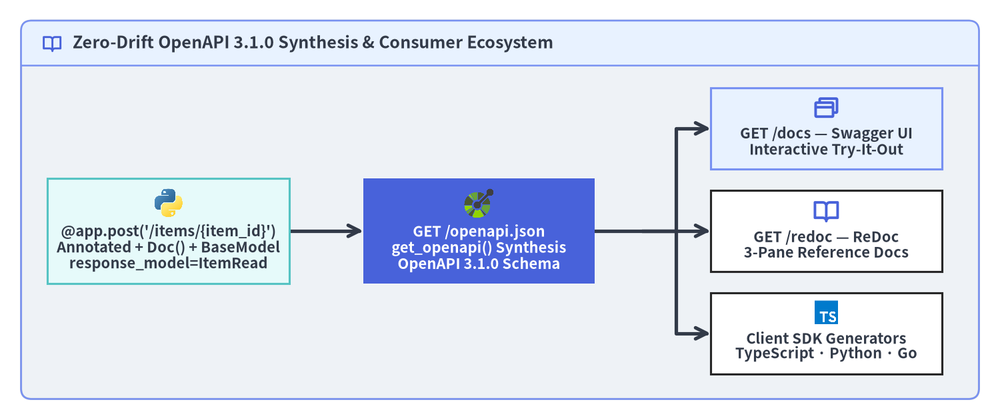

Quickstart & Interactive OpenAPI
This guide walks from a clean Python >=3.10 project to a fully typed Inventory API on FastAPI v0.162.2—complete with boundary validation, aggregated 422 Unprocessable Content error reporting, interactive OpenAPI 3.1.0 consoles, and an in-process TestClient suite.

Source Code
from drawlib.canvas import save, setup
from drawlib.diagrams.architecture import ArchitectureDiagram, CodeIcon, Node, PhosphorIcon
from drawlib.shapes import rectangle
from drawlib.styles import Styles
from drawlib.text import text
setup(width=184, height=84, dpi=150)
# Top HTTP Request Banner
rectangle((92.0, 74.5), width=172.0, height=10.0, style=Styles.PrimaryNeutral.patch(shape_r=2.0))
text(
(92.0, 74.5),
'HTTP Request: POST /items/42?currency=JPY + JSON Body {"name": "Mechanical Keyboard", "price_cents": 15800}',
style=Styles.DarkBold.patch(text_size=10.5),
)
diag = ArchitectureDiagram(
node_style=Styles.PrimaryBold,
node_text_style=Styles.DarkBold.patch(text_size=10.5),
edge_style=Styles.DarkBold,
edge_text_style=Styles.DarkBold.patch(text_size=10.0),
node_card_style=Styles.White,
)
# Left Column: Three Typed Parameter Extractors
n_path = diag.add(
Node(
"URL Path Segment\nitem_id: Path(ge=1)",
width=46,
height=14.5,
icon=PhosphorIcon.PATH,
icon_size=5.6,
card_style=Styles.Neutral,
),
(29, 54.5),
)
n_query = diag.add(
Node(
"Query Parameter\ncurrency: Query(pattern=...)",
width=46,
height=14.5,
icon=PhosphorIcon.FILE_SEARCH,
icon_size=5.6,
card_style=Styles.Neutral,
),
(29, 34.5),
)
n_body = diag.add(
Node(
"JSON Request Body\npayload: ItemCreate",
width=46,
height=14.5,
icon=CodeIcon.PYDANTIC,
icon_size=5.6,
card_style=Styles.Neutral,
),
(29, 14.5),
)
# Center Gate: FastAPI + Pydantic v2 Handler
n_gate = diag.add(
Node(
"FastAPI + Pydantic v2\ncreate_item() Validation\n& Type Coercion",
width=50,
height=21.0,
icon=CodeIcon.FASTAPI,
icon_size=6.4,
card_style=Styles.PrimaryFlat,
text_style=Styles.WhiteBold.patch(text_size=10.5),
style=Styles.WhiteBold,
),
(92, 34.5),
)
# Right Column: Valid 201 vs Invalid 422 Outcomes
n_ok = diag.add(
Node(
"201 Created\nresponse_model=ItemRead\nFiltered JSON Output",
width=46,
height=18.5,
icon=PhosphorIcon.CHECK_CIRCLE,
icon_size=5.8,
card_style=Styles.SuccessNeutral,
style=Styles.SuccessBold,
),
(155, 50.0),
)
n_err = diag.add(
Node(
"422 Unprocessable Content\nRequestValidationError\ndetail: [{loc, msg, type}]",
width=46,
height=18.5,
icon=PhosphorIcon.WARNING_CIRCLE,
icon_size=5.8,
card_style=Styles.DangerNeutral,
style=Styles.DangerBold,
),
(155, 19.0),
)
diag.connect(n_path, n_gate, routing="orthogonal")
diag.connect(n_query, n_gate, routing="direct")
diag.connect(n_body, n_gate, routing="orthogonal")
diag.connect(n_gate, n_ok, label="Valid", routing="orthogonal")
diag.connect(n_gate, n_err, label="Invalid", routing="orthogonal", style=Styles.DangerBold)
diag.draw()
save()
1. Installation: Standard Batteries vs Lean Production
FastAPI offers two installation profiles depending on whether you are prototyping locally with CLI/testing conveniences or building a minimal container image:
| Profile | Command | Included Packages & Best Use Case |
|---|---|---|
Batteries-Included (standard) |
uv add "fastapi[standard]" |
Adds fastapi-cli, uvicorn[standard], httpx, pydantic-settings, python-multipart, jinja2, email-validator, and opentelemetry-sdk |
| Lean Production Core | uv add fastapi "uvicorn[standard]" |
Installs only the 6 core FastAPI dependencies plus uvicorn (uvloop + httptools) for hardened production containers |
# Option A: Full developer experience (includes `fastapi` CLI and `httpx` for TestClient)
uv add "fastapi[standard]"
# Option B: Lean production runtime footprint
uv add fastapi "uvicorn[standard]"
# Run locally bound strictly to loopback (127.0.0.1) during development
uv run fastapi dev main.py --host 127.0.0.1 --port 8000
2. Complete Runnable Inventory API
Save the following module as main.py. Notice how ConfigDict(extra="forbid") rejects unexpected JSON properties at the boundary, while Annotated pairs Path / Query validation rules with PEP 727 Doc() descriptions:
from typing import Annotated
from annotated_doc import Doc
from fastapi import FastAPI, HTTPException, Path, Query, status
from pydantic import BaseModel, ConfigDict, Field
app = FastAPI(title="Inventory API", version="1.0.0")
store: dict[int, "ItemRead"] = {}
class ItemCreate(BaseModel):
model_config = ConfigDict(extra="forbid")
name: str = Field(min_length=1, max_length=80)
price_cents: int = Field(gt=0)
tags: list[str] = []
class ItemRead(BaseModel):
id: int
name: str
price_cents: int
currency: str
tags: list[str]
@app.post("/items/{item_id}", response_model=ItemRead, status_code=status.HTTP_201_CREATED)
async def create_item(
item_id: Annotated[int, Path(ge=1), Doc("Unique positive item identifier.")],
payload: ItemCreate,
currency: Annotated[str, Query(pattern="^[A-Z]{3}$"), Doc("ISO 4217 3-letter currency code.")] = "USD",
) -> ItemRead:
record = ItemRead(
id=item_id,
name=payload.name,
price_cents=payload.price_cents,
currency=currency,
tags=payload.tags,
)
store[item_id] = record
return record
@app.get("/items/{item_id}", response_model=ItemRead)
async def read_item(
item_id: Annotated[int, Path(ge=1), Doc("Unique positive item identifier.")],
) -> ItemRead:
if item_id not in store:
raise HTTPException(status_code=status.HTTP_404_NOT_FOUND, detail="Item not found")
return store[item_id]
3. Automatic 422 Validation Error Anatomy
Instead of failing on the first bad field and forcing callers through frustrating trial-and-error cycles, FastAPI evaluates path, query, and body inputs together. Sending POST /items/0?currency=us with {"name": "", "price_cents": -5} automatically returns HTTP 422 Unprocessable Content pinpointing every violation via loc:
{
"detail": [
{
"type": "greater_than_equal",
"loc": ["path", "item_id"],
"msg": "Input should be greater than or equal to 1",
"input": "0",
"ctx": {"ge": 1}
},
{
"type": "string_pattern_mismatch",
"loc": ["query", "currency"],
"msg": "String should match pattern '^[A-Z]{3}$'",
"input": "us",
"ctx": {"pattern": "^[A-Z]{3}$"}
},
{
"type": "string_too_short",
"loc": ["body", "name"],
"msg": "String should have at least 1 character",
"input": "",
"ctx": {"min_length": 1}
},
{
"type": "greater_than",
"loc": ["body", "price_cents"],
"msg": "Input should be greater than 0",
"input": -5,
"ctx": {"gt": 0}
}
]
}
4. Interactive OpenAPI 3.1 Ecosystem
Without writing a single line of YAML, app.openapi() inspects every registered APIRoute and synthesizes an OpenAPI 3.1.0 + JSON Schema 2020-12 document cached on app.openapi_schema:

Source Code
from drawlib.canvas import save, setup
from drawlib.diagrams.architecture import (
ArchitectureDiagram,
CodeIcon,
Node,
PhosphorIcon,
)
from drawlib.icons import phosphor
from drawlib.smartarts import Panel
from drawlib.styles import Styles
setup(width=190, height=80, dpi=150)
outer = Panel(
"Zero-Drift OpenAPI 3.1.0 Synthesis & Consumer Ecosystem",
style=Styles.Neutral.patch(shape_r=2.0),
header_style=Styles.PrimaryNeutral.patch(shape_line_width=1.2),
text_style=Styles.DarkBold.patch(text_size=12.0),
icon=phosphor.book_open,
icon_style=Styles.PrimaryBold,
header_variant="filled",
header_height=8.5,
)
outer.draw((4.0, 4.0), width=182.0, height=72.0)
diag = ArchitectureDiagram(
node_style=Styles.PrimaryBold,
node_text_style=Styles.DarkBold.patch(text_size=10.5),
edge_style=Styles.DarkBold,
edge_text_style=Styles.Dark.patch(text_size=10.0),
node_card_style=Styles.White,
)
n_route = diag.add(
Node(
"@app.post('/items/{item_id}')\nAnnotated + Doc() + BaseModel\nresponse_model=ItemRead",
width=46,
height=20.0,
icon=CodeIcon.PYTHON,
icon_size=6.0,
card_style=Styles.SecondaryNeutral,
),
(32, 36),
)
n_schema = diag.add(
Node(
"GET /openapi.json\nget_openapi() Synthesis\nOpenAPI 3.1.0 Schema",
width=44,
height=20.0,
icon=CodeIcon.OPENAPI,
icon_size=6.2,
card_style=Styles.PrimaryFlat,
text_style=Styles.WhiteBold.patch(text_size=10.5),
style=Styles.WhiteBold,
),
(91, 36),
)
n_swagger = diag.add(
Node(
"GET /docs — Swagger UI\nInteractive Try-It-Out",
width=44,
height=15.5,
icon=PhosphorIcon.BROWSERS,
icon_size=5.2,
card_style=Styles.PrimaryNeutral,
),
(157, 55.5),
)
n_redoc = diag.add(
Node(
"GET /redoc — ReDoc\n3-Pane Reference Docs",
width=44,
height=15.5,
icon=PhosphorIcon.BOOK_OPEN,
icon_size=5.2,
card_style=Styles.White,
),
(157, 36.0),
)
n_sdk = diag.add(
Node(
"Client SDK Generators\nTypeScript · Python · Go",
width=44,
height=15.5,
icon=CodeIcon.TYPESCRIPT,
icon_size=5.0,
card_style=Styles.White,
),
(157, 16.5),
)
diag.connect(n_route, n_schema, routing="direct")
n_schema.fork([n_swagger, n_redoc, n_sdk], at_x=122.0)
diag.draw()
save()
GET /openapi.json: Machine-readable OpenAPI3.1.0contract consumed by API gateways, contract tests, and code generators (openapi-ts,openapi-python-client).GET /docs(Swagger UI) &GET /redoc(ReDoc): Interactive browser portals served automatically in development. In locked-down production environments where interactive consoles should not be exposed publicly, passFastAPI(openapi_url=None)(or gate them behind internal authentication).
5. Verifying Endpoints with TestClient
FastAPI's TestClient executes ASGI requests directly in memory without opening a network socket, making boundary tests instantaneous in pytest:
from fastapi.testclient import TestClient
from main import app
client = TestClient(app)
def test_inventory_lifecycle() -> None:
ok = client.post("/items/42?currency=JPY", json={"name": "Keyboard", "price_cents": 15800})
assert ok.status_code == 201
assert ok.json()["currency"] == "JPY"
assert client.post("/items/0?currency=us", json={"name": "", "price_cents": -5}).status_code == 422
assert app.openapi()["openapi"].startswith("3.1.")
With the fundamentals verified, continue to Chapter 2: Bounded Contexts & Layering to scale FastAPI cleanly past 100,000+ LOC, or dive deeper into parameter extractors in Chapter 3: Path, Query, Header, Cookie & Body.